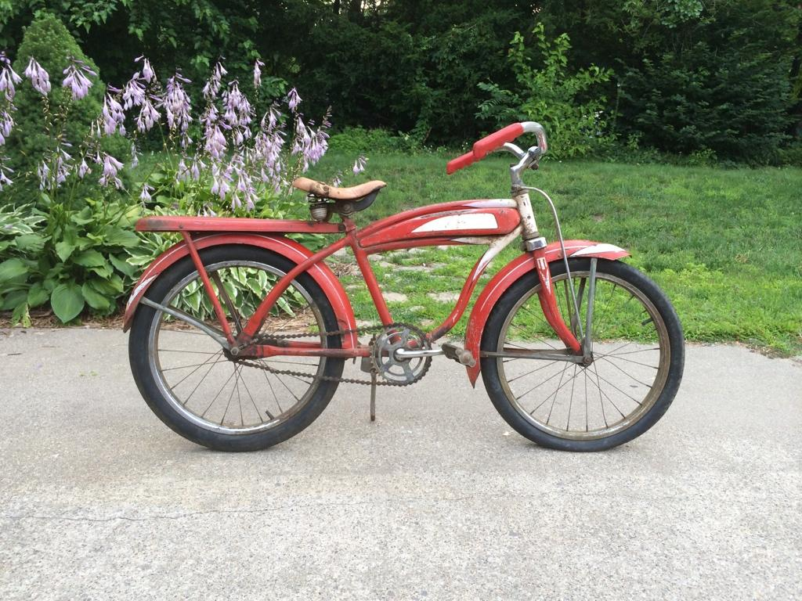

Lab 6 - Objects and Arrays
Challenge
This was tricky because Java is still so new to me. Overall I am happy with it but it wouldn't have worked without the help of peer programming and asking the discord for help.
Problems
The most major problem was the incorrect code in the images in the assignment page. After several hours of trouble shooting we fixed all the things that innitially didn't work
Reflection
I think I am shakier than I previously thought with Java. After this, I feel like I feel confident about the idea but not confident about a errorless exicution.